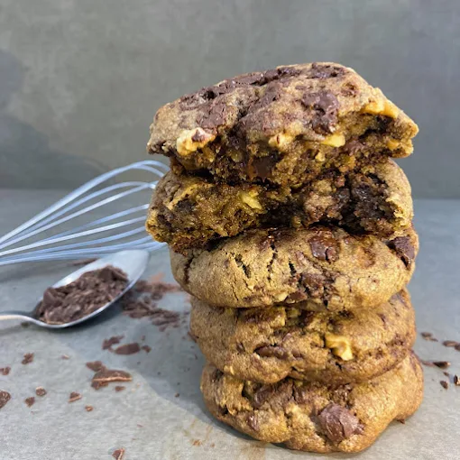

| Bebida | Nome | Cafeteria | Nota |
|---|---|---|---|

|
Americano | Versa | ★ 4.9 |
|
 |
Cookie Nozes e chocolate | Diade café | ★ 4.5 |

|
Shake Paçoca | Versa | ★ 4.3 |

|
Chá Gelado | Cúrcuma | ★ 4.0 |
| Recomendação do mês: Cappuccino brasileiro ✨ | |||